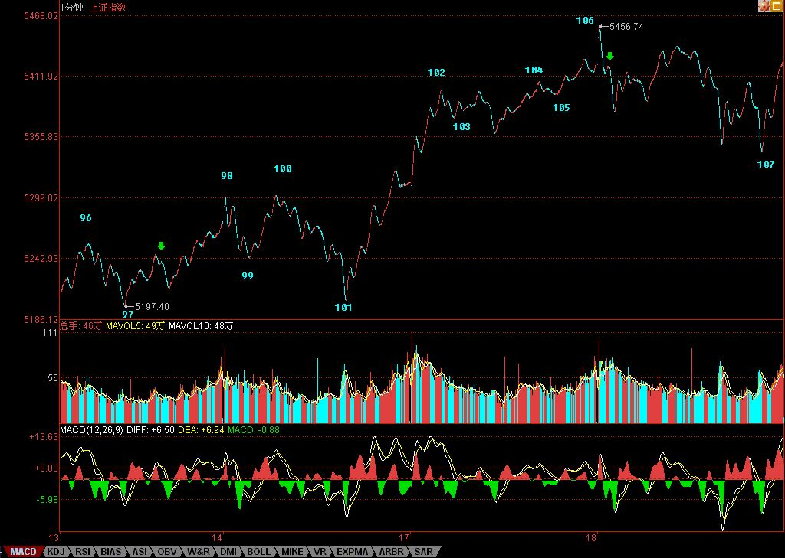

缠中说禅博客
缠中说禅 当代奇人，
一个永远只愿站立且希望探索、
展示人的所有潜能和可能的人，真实身份未明。

等待那万众期盼的每周一跌
(2007/09/18 15:53:21 周二)
现在的走势，极端简单，就是真突破还是假突破的问题，一般来说，如果是假的，就是三、四天内见分晓，先来两、三个十字星之类的玩意，然后虚晃一枪向下跳水。如果按这个把戏，周四前后就是田亮一把的日子。而且，现在，每周一跳，跳了，都爽了，就该干嘛干嘛了。
当然，用本ID的理论，就没有这么多麻烦事，而且绝对不用去宣称什么这是世纪大顶之类的无聊事情。如果你是按30分钟操作的，什么顶呀底呀，只要按照节奏来，绝对不参与30分钟级别的下跌，那么这世界在你眼里，就只有三种活动，30分钟级别的上涨、盘整、下跌，世纪大顶、火里刀上也一样可以逍遥游，其他级别的操作也是一样的。
现在的情况十分简单，对于短线来说，就是现在依然是原来76-85那个5分钟中枢的中枢震荡，现在的问题只不过是，该5分钟的中枢的第三类买点是否出现。如果不出现，那就继续中枢震荡，当然，那时候，这5分钟就扩展成30分钟的中枢震荡了，那就更好玩了。
至于超短线来说，昨天问题的答案在图里就有了，分不清楚的，请好好研究一下。目前，就是102-105的一个中枢震荡。注意，目前这个离开原来5分钟中枢的走势并没有完成，所以还谈不上回抽，那今天震荡的低点，刚好在78之上，也就看出，这中枢震荡并不是瞎掰的，这么远的距离，依然起着作用。
个股，没什么可说的，就算是假突破，只要这大的中枢震荡存在，那么个股机会依然汹涌，假期前，又有一个持股持币的无聊问题，关键还是你的操作级别和该级别中的表现。对于完全不了解本ID理论的，就看5日或5周线，特别是5周线，这是中短线的关键。
马上有一件新疆的什么无聊管道要上市的事情要谈，不能回答问题了，先下，再见。
